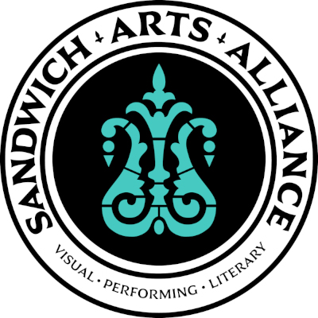

Welcome to Sandwich Open Mic! This community-based event, in collaboration with the Sandwich Arts Alliance, is an opportunity to showcase your talent, connect with fellow artists and help promote Sandwich as a destination for the arts.
This is an alcohol-free event. Performers of all types, of all ages and all skill levels are invited. Whether you're a musician, poet, story teller, comedian, writer, playwrite, a thespian, or a mime, or you want to support the performers, please join us for a fun evening of entertainment in a welcoming and supportive setting.
Sandwich Open Mic takes place on the 3rd Saturday of each month, from 4:30 to 7 PM.
Upcoming dates confirmed for 2024 and 2025 are:
October 19 * November 16 * January 18 * February 15
Where: Gates Room fellowship hall at First Church Sandwich, UCC
136 Main St, Sandwich, MAParking is available at the rear of the building.
Use side or rear entrances of the church. The side entrance is wheelchair-accessible.
Fun fact: Having been featured on Elvis Presley's "How Great Thou Art" album cover, folks soemtimes refer to the First Church of Christ in Sandwich as the Elvis Church...
Two ways to sign up for a performance slot:
In person: Sign up in person. Arrive at the event early between 4:30 and 5 PM, if possible, to guarantee a slot. There are 12 slots for each event, with an expectation that each performance will last about 10 minutes, or longer (say, 15 minutes) if fewer folks have signed-up.
Via email: Prior to the event send an email to sign up for a performance slot. Indicate your name, contact info, the date you'd like to perform, any preference you might have for order of performance, and a brief note on type of performance.
If you have any questions or inquiries about the event, feel free to contact us:
Contact us via email at: sandwichopenmic@pm.me
Donations go first to pay expenses for the evening (room rental, snacks) and all remaining amount goes to the Sandwich Arts Alliance.
Donations are voluntary. Suggested donation is $5 to $10 per person.
Donations can also be made via Venmo to @sandwichopenmic.
Or in lieu of a donation, become a member of the Sandwich Arts Alliance!!
